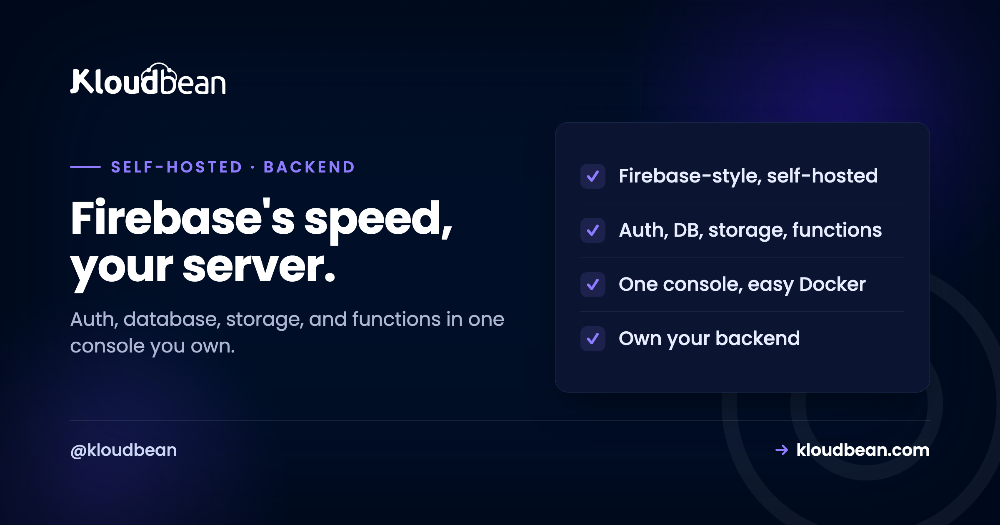

Self-Host Appwrite: The Firebase-Style Backend You Actually Own

If you have built on Firebase, you know the feeling: auth, a database, storage, and functions all in one place, moving fast, right up until the pricing or the lock-in makes you nervous. Appwrite is the open-source answer to that feeling. It gives you the same bundled, get-going-quickly backend, but on a server you own. The comparison everyone reaches for is Supabase, and it is a fair one, except the two make genuinely different bets. Getting that difference right is how you avoid picking the wrong backend and regretting it three months in. So this guide leads with the decision, not the install.
Appwrite is an open-source backend server, a self-hostable Firebase alternative that bundles authentication, databases, storage, serverless functions, and messaging into a single console. Under the hood it wraps a relational database (MariaDB) with Redis alongside, and it exposes a simplified, document-style API rather than raw SQL. Self-host it when you want a Firebase-style, batteries-included backend that you own, and when a straightforward Docker-based setup matters to you. The key decision is Appwrite versus Supabase: Appwrite gives you bundled services and a document-style model, while Supabase gives you a real PostgreSQL database and the SQL to go with it. Pick the model you want to build in, not the longer feature list.
What Appwrite actually is
A complete backend in a box, designed so you spend your time on your app rather than on plumbing.
Appwrite is an open-source backend server that packages the things almost every app needs into one console: user authentication, a database, file storage, serverless functions in a range of runtimes, and messaging. It has real-time updates built in across its services, GraphQL support, and scoped API keys, and its server is released under the permissive BSD 3-Clause license. Under the hood it runs on a relational database (MariaDB) with Redis alongside for caching and real-time, but you rarely touch that directly. You talk to Appwrite through its SDKs and API, using a document-style model of collections and documents that will feel immediately familiar if you have used Firebase.
That familiarity is the point. Appwrite is for developers who want Firebase's speed and shape without Firebase's ownership model, delivered as software they run themselves. Which brings us straight to the comparison that actually matters.
Appwrite or Supabase? They make different bets
People treat these as interchangeable open-source backends. They are not, and the difference is not cosmetic.
Supabase's bet is PostgreSQL. You get a real Postgres database and the tooling is built around SQL you write and own, which is wonderful if you want the power and portability of a proper relational database and are happy working in SQL. Appwrite's bet is abstraction. It wraps its database in a simplified, document-style API and bundles everything behind one console, so you move quickly using SDKs without thinking much about the database underneath. One hands you the engine, the other hands you the car.
So the honest way to choose is to ask which model you want to build in. If you want raw Postgres and SQL, or you value that your data is a standard relational database, go with Supabase. If you want a Firebase-like developer experience, document-style data, and everything bundled with the least fuss, Appwrite is your tool. Feature checklists will tell you both do auth and storage and functions. They will not tell you the thing that actually shapes your codebase, which is the data model.
| Appwrite | Supabase | |
|---|---|---|
| The bet | Bundled console, abstraction | Real PostgreSQL, SQL you own |
| Data model | Document-style (collections, documents) | Relational, SQL-first |
| Feels like | Firebase, self-hosted | Postgres with superpowers |
| You interact via | SDKs and API | SQL, plus SDKs |
| Self-host shape | One Docker stack, one console | Several services together |
| Choose it when | You want Firebase's model, owned | You want Postgres and SQL, owned |
The nice surprise: it is straightforward to self-host
Here is a genuine point in Appwrite's favour if self-hosting is your goal.
Appwrite is designed to be run yourself, and its Docker-based setup is refreshingly contained. Because everything lives behind one console and ships as a coordinated stack, standing it up is closer to "start the stack, open the console" than to assembling a handful of separate services and wiring them together. That relative simplicity is one of the real reasons people choose Appwrite over heavier self-hosted backends, and it also makes it a sensible pick for data-sovereignty and air-gapped situations where running the whole thing yourself is the requirement, not just a preference.
None of that means it is weightless. It is a full backend with a database, a cache, and several services, so give it a real server with comfortable memory. But among "run your own backend" options, Appwrite asks less of you at setup time than most, and that counts for a lot when you would rather be building your app.
The tradeoff, named honestly
Every design choice costs something, and Appwrite's is worth saying out loud so you choose with open eyes.
The document-style abstraction that makes Appwrite fast to build on is also a layer between you and the raw database. You get speed and a clean, consistent API, and you give up some of the direct SQL power and the it-is-just-Postgres portability that Supabase offers. For most application work that is a good trade, and it is exactly why Firebase was popular in the first place. But if your project leans on complex SQL queries, heavy relational modelling, or the ability to point any Postgres tool at your data, that abstraction can feel like a wall rather than a convenience. Neither is wrong. Just know which side of that trade your project sits on before you commit, because switching backends later is real work.
What it takes to run, and backups
A real server, its data layer, and a backup habit, which is the same shape as any backend worth trusting.
Appwrite runs as its Docker stack on a server, with a relational database (MariaDB) and Redis as its data and cache layer. For production, the piece to treat carefully is that data layer: your users, your documents, and your files all live there, so pointing Appwrite's storage at a managed MariaDB and using managed Redis means the parts that hold your data are maintained and backed up rather than left to a container you have to mind. File storage belongs in object storage.
Backups follow from that: a regular, automatic dump of the database plus your stored files, shipped off the server, with a restore you have tested once, as laid out in the backups guide. A backend holds your users and their data, so this is not the corner to cut. Set it up before you launch anything real on it.
What production adds to self-Host Appwrite
Appwrite pairs well with a managed platform because the annoying parts (the server, the database, TLS, backups) are exactly what a managed platform is for. You run Appwrite's stack on a managed server across any of seven clouds, behind a managed reverse proxy with free auto-renewing SSL, with its data layer on managed MariaDB and managed Redis so your users and documents sit on a database that is backed up automatically, and object storage for files. One dashboard, and a resize rather than a rebuild when you grow. It is not a one-click app, but its self-host story is one of the friendliest in this category.
The honest boundary: the platform runs the server, the database, SSL, and backups. The Appwrite application, your data, and your app's code are yours. Managed hosting makes Appwrite dependable to run and keeps its data safe. It does not write your app or choose your data model, and the data model is the one decision worth making deliberately.
If self-Host Appwrite was the symptom, not the cause
For the Postgres-first alternative and the full comparison, self-hosting Supabase. There is a broader survey in best self-hosted tools. The data layer underneath: managed MariaDB and MySQL and managed Redis, kept safe with server backups, and files in object storage. Deploying the app that talks to it is covered in deploying an app to production.
Prototype to production, without the babysitting.
Run the app as an always-on process with managed databases, Redis, object storage, and automatic backups beside it. Deploy from Git with live build logs, and keep the infrastructure someone else's problem.
- ✓ Managed databases
- ✓ Always-on processes
- ✓ Object storage
- ✓ Automatic backups
- ✓ Free SSL
- ✓ Git deploy
- ✓ Free migration
Plans from $8/mo · Free migration assistance · Free trial
FAQ
What is Appwrite?
Appwrite is an open-source backend server, a self-hostable Firebase alternative. It bundles authentication, a database, file storage, serverless functions, and messaging into a single console, with real-time updates and GraphQL support. Under the hood it runs on a relational database (MariaDB) with Redis, but you build against its document-style SDKs and API rather than writing SQL directly. The server is released under the permissive BSD 3-Clause license.
Appwrite or Supabase, which should I self-host?
Choose by data model. Appwrite gives you a Firebase-style, document-based experience with everything bundled behind one console, which is fast to build on. Supabase gives you a real PostgreSQL database and SQL you write and own, which is better if you want relational power and portability. Feature lists look similar, but the model shapes your codebase, so pick the one you actually want to build in.
Is Appwrite easier to self-host than Supabase?
Generally yes. Appwrite ships as a coordinated Docker stack behind a single console, so setup is closer to starting the stack and opening the console than to wiring several separate services together. Supabase self-hosting involves more moving parts. That relative simplicity is one of the main reasons people pick Appwrite when running their own backend is the goal, including for data-sovereignty or air-gapped needs.
What database does Appwrite use?
It runs on a relational database, MariaDB, with Redis alongside for caching and real-time features. The important thing for developers is that you do not interact with that database directly through SQL. Appwrite presents a simplified, document-style API of collections and documents, and manages the underlying relational storage for you.
What is the catch with Appwrite's document-style model?
The abstraction that makes it fast to build on is also a layer between you and raw SQL. You gain a clean, consistent API and quick development, and you give up some direct relational power and the portability of data that is just standard Postgres. For most app work that is a good trade. If your project needs complex SQL or heavy relational modelling, it can feel limiting, so weigh it before committing.
What does Appwrite need to run?
A real server with comfortable memory, since it is a full backend with a database, a cache, and several services running as a Docker stack. For production, put its data layer on a managed MariaDB and managed Redis so the parts holding your users and documents are maintained and backed up, and keep files in object storage. It is more than a lightweight tool, but its setup is friendlier than most self-hosted backends.
How do I back up Appwrite?
Back up its data layer: an automatic dump of the database plus your stored files, shipped off the server on a schedule, with a restore you have tested once. Because a backend holds your users and their data, this is essential rather than optional. Using a managed MariaDB puts the most important part on an automatic backup routine, and object storage covers the files.
Is Appwrite a one-click app on Kloudbean?
No. Appwrite runs as its own Docker stack on a managed server rather than as a one-click install, though its setup is among the friendlier ones in this category. You run it on a right-sized server behind a managed reverse proxy with free SSL, with managed MariaDB and Redis for the data layer. The platform keeps the server and database healthy while the Appwrite app and your data stay yours.